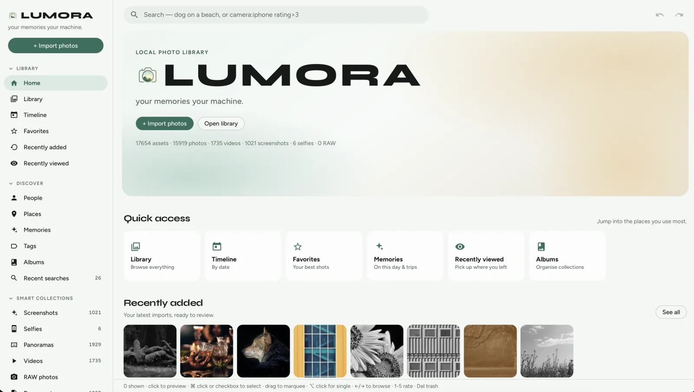

Google Photos alternative
Google Photos convenience. Zero cloud.
Want search that feels like Google Photos without sending your life to a cloud album? LUMORA indexes folders on your disk and searches them with optional on-device AI.

- No uploadsOriginals stay in your folders. Nothing is synced to a hosted library.
- No accountDownload, import, search — no Google login.
- Familiar searchDescribe a scene in plain language when CLIP is installed.
- Cleanup toolsDuplicates and blurry review without a cloud vault.
Your memories. Your machine.
Open-source local-first photo library — no subscription, no cloud lock-in.